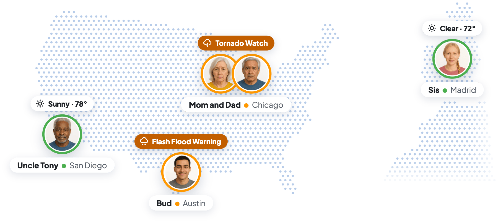

Looop is a safety notifications app for distributed families, built by LooopApp LLC in Austin and live on the App Store since May 2026.
At a glance, any time of day, it shows whether each Loved One's day looks typical. It sends a nudge when something looks unusual, like a storm nearby or a phone that hasn't been picked up for hours.
Families know when to check in without calling every day, and the people they love keep their independence.
Health, fitness, spending, activity, weather, crime, and the shape of each day all come together in one place.

The Problem
Families are spread out, and keeping up means checking the weather in five cities, a map in one app, and crime alerts in another.
That takes a toll. 64% of family caregivers report high emotional stress (AARP/NAC 2025).
Most family apps are built around a map that shows where someone is. These families want to know whether everyone is okay today.

Why Now
The largest companies in family safety and health are moving toward aging parents and distributed families.
- Life360 has 102.4 million monthly users and 3.2 million paying family groups, which it calls Paying Circles (Q2 2026 results), and on its Q2 2026 call it named aging parents as a next line of business.
- Luffu was launched in February 2026 by Fitbit's founders, who sold Fitbit to Google for $2.1 billion. Axios reported that it's self-funded. Its Luffu Link band, priced at $299.99 plus $19.99 a month, ships in early 2027 (HIT Consultant).
The devices Looop needs are already in older adults' hands.
- 79% of Americans 65 and older own a smartphone (Pew Research Center, 2026).
- 24% of adults 65 and older, and 35% of adults 50 to 64, have a smartwatch such as an Apple Watch (Pew Research Center, 2026).
Looop runs on the iPhone, the Apple Watch, and any device that shares with Apple Health, so families can start today with nothing new to buy or wear.
The Gap Looop Fills
Families can piece this together today, but it takes a stack of apps: A weather app for each city, a location app, a crime-alert app, Apple Health sharing, and bank alerts. None of them says whether today is normal for the person you're worried about.
The other options each cover one part of the job.
- Life360 does a lot well: A live family map, driving safety, crash detection, and weather and crime alerts. Its app is built around a map of where everyone is.
- Apple's Find My shares location and can notify you when someone arrives or leaves. Looop works alongside it.
- Medical alert services respond once there's an emergency.
- Luffu is a family health app whose next product is a band families buy and wear.
Looop gives families one answer about each Loved One that they can check any time: A Typical Day, or an Unusual Day that might be worth a call. It's also one place to look for everything they used to check in separate apps. The Weather Grid shows everyone's forecast at once, and alerts about crime, arrivals, and unusual spending sit next to each person's answer, on the phones and watches they already have.
The Opportunity
There are 63 million family caregivers in the US, up 45% in a decade (AARP/NAC 2025).
Each caregiver who wants alerts subscribes, so at $49.99 a year the market is about $3.2 billion.
Older adults have moved onto smartphones quickly, so the families Looop serves can already use it.
Americans 65 and older who own a smartphone
The number will keep growing. By 2030, every baby boomer will be 65 or older, and the Census Bureau projects that older adults will outnumber children for the first time in US history by 2034 (US Census Bureau).
The Product
Looop sends alerts about health, fitness, spending, activity, weather, crime, and the shape of each day. All of it comes together in one answer about each Loved One, kept current through the day: A Typical Day, or an Unusual Day that might be worth a call.
Families hear about:
- Severe Weather: Storms, flood warnings, and extreme heat or cold wherever each Loved One is, in more than 50 countries.
- Nearby Crime: A heads-up when crime is reported near a Loved One, at the distance the family chooses, in all 50 US states.
- Safe Arrivals: Word when a Loved One arrives at a saved place, or at a hospital, police station, or airport.
- Inactivity: A phone that hasn't been picked up for hours, or a Loved One who hasn't left home in three days.
- Unusual Spending: An unusually large charge on a linked account, which can be an early sign of a scam.
- Health: An unusually high or low heart rate, an unusual breathing rate, or a change in sleep, through Health & Fitness sharing with Apple Health.
- Fitness: Steps, walks, and workouts that fall off from that person's usual days.
Together, these alerts tell families when a call is worth making, and when everyone is fine and they can get on with their day.
Why Looop Wins
Looop gives families one easy answer instead of a map and a stack of apps.
It learns each Loved One's own normal for activity, health, and phone use, and combines it with weather, crime, and spending alerts for wherever they are. The result is one answer families can check any time: A Typical Day, or an Unusual Day that might be worth a call.
Because activity, health, and phone use are measured against that person's own normal, families hear about real changes in someone's day.

That answer depends on steady data from each phone. Reliable background updates are how Life360 became the category leader, and Looop is built the same way.
Looop keeps working in the background, after a force-close, and after a restart, and it picks up again as soon as a dead battery is charged.
Privacy is an advantage Looop can keep as it grows. 81% of Americans are concerned about how companies use their data (Pew Research Center, 2023).
Life360's ad revenue reached $22 million in Q2 2026, up 315% in a year (Q2 2026 results). Looop makes its money from subscriptions alone, so its promise that family data is never sold or used for ads holds at any size.
Where We Are
Looop has been live on iPhone since May 2026, and we've used that time for usability and UI testing with early families.
We've shipped 417 product updates since March 30, 2026.
In June 2026, a small Meta ad campaign brought new people through sign-up and invites as a usability test. 78% finished setup, and the test showed that people were drafting invites without sending them.
Sign-up now requires an accepted invite, so every new account starts as a real family.
Looop is pre-marketing and pre-revenue. The free trial and Looop Plus are live, and funding will pay for the first real marketing.
Business Model
Looop is free to download, and anyone in the family can see everyone's status for free, including on the Home Screen widget.
Each family member who wants push alerts subscribes to Looop Plus for $4.99 a month or $49.99 a year. Plus adds the alerts about health, fitness, unusual spending, activity, weather, and crime, each person's full details and history, and more than one family group.
The 14-day free trial starts when a second person joins, so families try Looop together.
Every Loved One joins by invitation, so each family brings in more people.
For most families, Looop costs less than the alternatives. One caregiver who wants alerts pays $4.99 a month, and everyone else views for free.
- Life360's paid plans run $9.99 to $24.99 a month per family and are built around driving, roadside help, and identity protection (Life360 plans).
- Luffu Link, Luffu's band, is $299.99 plus $19.99 a month.
- Medical alert services charge monthly for emergency response.
Looop needs nothing new to buy or wear and charges only the people who want the alerts.
Founder
Jeff used Life360 when his kids started driving, and it did that job well.
As the kids grew up, the family spread out. His twins left for college in two different states, and his parents, now living alone in separate homes, were in two more cities. A family of five was suddenly spread across five cities.
Keeping up meant checking the weather in five places, a map in one app, and crime alerts in another.
He didn't want to take away anyone's independence by watching a dot on a map. What he needed was to know when to check in.
The July 2025 Hill Country flood made that clear. His twins were at camps in the area, and he waited until that night to hear they were safe.
Jeff is a software engineer and product and UX leader in Austin (jeffscarpenter.com). He used that background to create Looop: An answer about each person he can check any time, from the phones they already carry.
Looop is his fourth startup, after AgileGraph, Ringtail Design, and Live Earth.
- Bootstrapped Ringtail Design to 50 people and $7M+ in revenue, with clients including DARPA and SOCOM
- As CEO of Live Earth, signed 10 enterprise customers across 5 industries and 40+ resellers
- Sold an enterprise-wide AgileGraph license to the US Army
- Raised $14M in private investment and moved 4 prototypes into major DoD programs
- At Lumen, built a 23-person UX team, grew the CenturyLink app from 800K to 1.4M+ users, and raised its rating from 2.4 to 4.4
He has worked on Looop half-time for more than a year and will go full-time once it's funded.
Contact
Jeff Carpenter, jeff@thelooopapp.com
Looop isn't an emergency service; in an emergency, call 911.
Looop is a trademark of LooopApp LLC. Life360, Luffu, Luffu Link, Fitbit, Google, Apple, iPhone, Apple Watch, Apple Health, Find My, App Store, Meta, AARP, Lumen, CenturyLink, Axios, HIT Consultant, AgileGraph, Ringtail Design, and Live Earth are trademarks of their respective owners. Naming them here doesn't mean they endorse Looop.